Un proyecto de la Fundación para el Estado de Derecho
La ciudadanía tiene derecho a saber cómo funciona la institución encargada de investigar a los más altos funcionarios del Estado.
La Comisión de Investigación y Acusación de la Cámara de Representantes tiene una de las responsabilidades más importantes del sistema constitucional colombiano: investigar al Presidente de la República, al Fiscal General de la Nación y a los magistrados de las altas cortes.
A pesar de la trascendencia de esta función, la Comisión ha sido objeto de cuestionamientos históricos por sus bajos niveles de transparencia, la limitada disponibilidad de información pública, la duración de los procesos y la escasez de resultados visibles para la ciudadanía.
El Observatorio de la Comisión de Acusaciones es una iniciativa independiente orientada a recopilar, analizar y divulgar información verificable sobre el funcionamiento de esta institución. Busca promover el acceso a información pública, la transparencia de los procedimientos, la trazabilidad de las investigaciones, la rendición de cuentas y el debate informado sobre posibles reformas y mejoras institucionales.
¡Se trata de una institución clave para la democracia!
Durante 2025 y 2026, la Fundación para el Estado de Derecho obtuvo tres decisiones favorables del Tribunal Administrativo de Cundinamarca mediante recursos de insistencia promovidos contra negativas de acceso a información pública de la Comisión.
Los jueces concluyeron que información relacionada con el funcionamiento institucional de la Comisión, sus investigaciones, archivos, prescripciones, caducidades e indicadores de gestión no puede permanecer oculta cuando no existe una reserva legal expresa.
Estas decisiones constituyen uno de los avances más importantes en materia de acceso a la información y rendición de cuentas sobre la Comisión desde la expedición de la Constitución de 1991.
Investigaciones de interés público
Seguimiento a los asuntos que plantean debates jurídicos, constitucionales e institucionales relevantes para el país. El Observatorio busca contribuir a la comprensión de las competencias de la Comisión, el alcance de las investigaciones que adelanta y los criterios aplicados en el control de los aforados constitucionales.
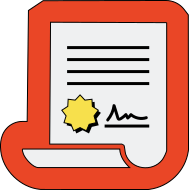
Seguimiento a procesos, reparto y asignación de expedientes
Seguimiento a denuncias, quejas y procesos que involucran a altos funcionarios aforados. Monitoreo de los criterios utilizados para distribuir las investigaciones entre representantes investigadores, los mecanismos de reparto y turno, los tiempos de asignación y las cargas de trabajo.
Tiempos procesales y resultados
Análisis de la duración de las investigaciones, turnos, archivos, prescripciones, caducidades y demás decisiones adoptadas por la Comisión.
Transparencia y acceso a la información
Seguimiento al cumplimiento de las obligaciones legales de publicidad, respuesta a solicitudes de información y rendición de cuentas.
Propuestas de mejora institucional
Formulación de recomendaciones orientadas a fortalecer la eficiencia, la transparencia, la trazabilidad de los procesos, la publicidad de las actuaciones y la confianza ciudadana en la Comisión.
La Comisión de Investigación y Acusación está integrada por dieciocho representantes a la Cámara elegidos de acuerdo con la composición política del Congreso de la República.
Aquí podrá consultar quiénes integran actualmente la Comisión. En futuras etapas del Observatorio incorporaremos información sobre las investigaciones asignadas, los mecanismos de reparto y turno, avances, responsabilidades y otros indicadores relacionados con la actividad de la Comisión.
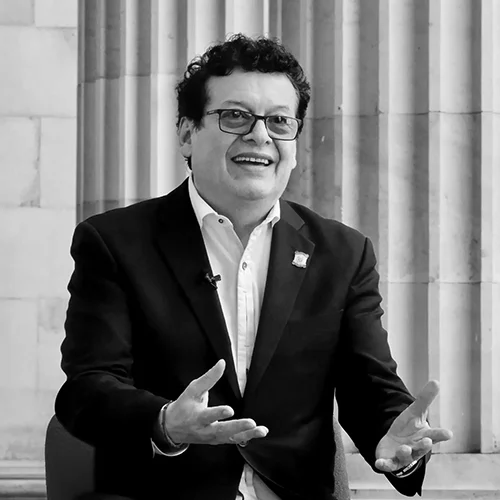
Alirio Uribe Muñoz
Pacto HistóricoAbogado y defensor de derechos humanos bogotano. Durante años ejerció la presidencia del Colectivo de Abogados José Alvear Restrepo (Cajar), ganando notoriedad nacional e internacional por la representación de víctimas del conflicto armado. Políticamente militó en el Polo Democrático Alternativo y retornó a la Cámara por Bogotá a través del Pacto Histórico, enfocándose en reformas de justicia y control político.
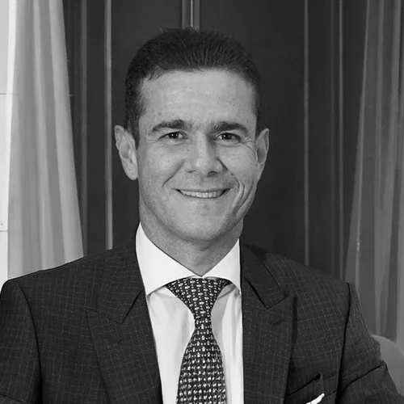
Carlos Alberto Cuenca Chaux
Cambio RadicalProfesional en Mercadeo de la Universidad Cooperativa de Colombia, especialista en Marketing Político y Estrategias de Campaña, y magíster en Comunicación Política. Nació en Algeciras (Huila) y se radicó desde joven en Inírida (Guainía), donde construyó su capital político y se convirtió en la principal figura de Cambio Radical en ese departamento. Ha sido elegido de manera continua a la Cámara desde finales de la década de 2000, fue presidente de la Cámara de Representantes en la legislatura 2019–2020, y como miembro de la Comisión Tercera y de la Comisión de Acusación ha tenido papel central en debates fiscales y de control político.
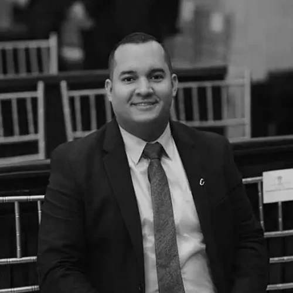
Daniel Restrepo Carmona
Partido ConservadorAbogado de la Institución Universitaria de Envigado, con especialización en contratación estatal en la misma institución. Nació en Medellín en 1991 y creció en Itagüí, donde inició su trayectoria como servidor público en la administración municipal y luego como concejal, llegando a ser el concejal más joven y uno de los mayores electores del municipio. En 2022 dio el salto al Congreso como representante a la Cámara por Antioquia con la mayor votación conservadora del departamento, integrando la Comisión Tercera y la Comisión Legal de Investigación y Acusación.
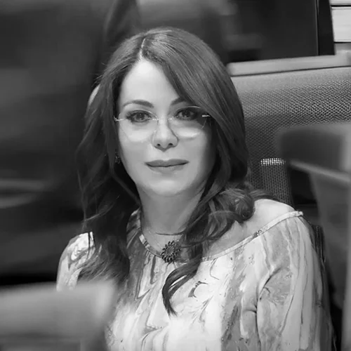
Gloria Elena Arizabaleta Corral
Pacto HistóricoAbogada egresada de la Universidad de San Buenaventura, con una especialización en Derecho Penal de la Universidad Sergio Arboleda. Cuenta con una extensa carrera en el sector judicial como fiscal y funcionaria de la Fiscalía General de la Nación. Entró a la política nacional elegida por la lista de la coalición Pacto Histórico por el departamento del Valle del Cauca y ha liderado la Presidencia de la Comisión de Investigación y Acusación.
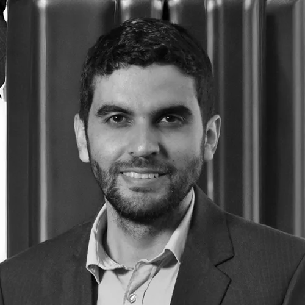
Hernán Darío Cadavid Márquez
Centro DemocráticoAbogado de la Universidad de Medellín, especialista en Derecho Público y Acciones Constitucionales de la misma universidad. Nació en Barbosa (Antioquia) en 1986 y trabajó durante años como asesor legislativo del uribismo y luego como director jurídico en la Oficina del Alto Comisionado para la Paz, participando como vocero del Centro Democrático frente al Acuerdo de La Habana. Desde 2022 es representante a la Cámara por Antioquia, donde se ha posicionado como una de las voces más visibles de oposición al gobierno nacional.
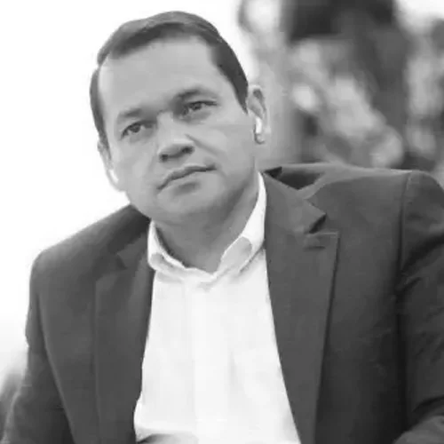
Jorge Alejandro Ocampo Giraldo
Pacto HistóricoProfesional en Estudios Políticos y Resolución de Conflictos de la Universidad del Valle. Inició su liderazgo en colectivos estudiantiles y juveniles en Cali. Tras postularse en previas contiendas locales, fue elegido representante a la Cámara por el Valle del Cauca bajo la bandera del Pacto Histórico, caracterizándose por un estilo de debate directo.
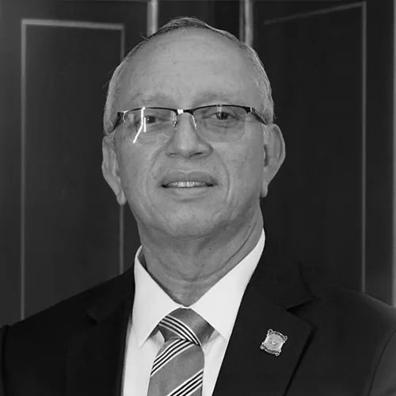
Jorge Eliecer Tamayo Marulanda
Partido de la UAbogado de la Universidad Santiago de Cali, con especializaciones en Derecho Administrativo y Constitucional, exconcejal de Cali en dos periodos y actual representante a la Cámara por el Valle del Cauca (Comisión Primera) desde el Partido de la U, vinculado al grupo político de Dilian Francisca Toro y cercano al gobierno de Gustavo Petro.
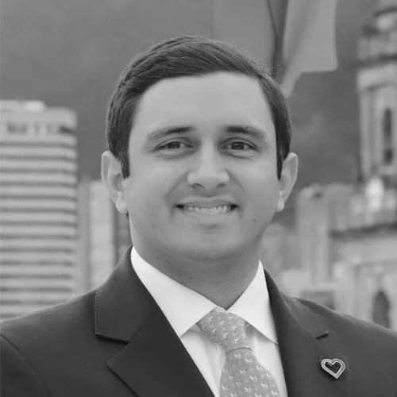
Jorge Rodrigo Tovar Vélez
Curules de pazAbogado de la Universidad del Rosario con énfasis en Derecho Constitucional y Derechos Humanos, especialista en Ciencias Penales y Criminológicas y en Gestión de Gobierno y Campañas Electorales, con maestría en Dirección Pública. Es hijo de Rodrigo Tovar Pupo, alias "Jorge 40", exjefe del Bloque Norte de las AUC, lo que generó amplia controversia cuando fue nombrado coordinador de víctimas en el Ministerio del Interior y luego cuando aspiró a la curul de paz. En 2022 resultó elegido representante a la Cámara por una de las curules de víctimas (CITREP), desde donde ha trabajado en proyectos de memoria, reparación y desarrollo regional en el Caribe.
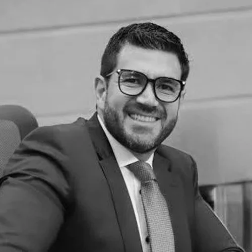
Juan Carlos Wills Ospina
Partido ConservadorAbogado, especialista en Derecho Administrativo y magíster en Derecho Constitucional y en Acción Política, representante a la Cámara por Bogotá desde 2018 por el Partido Conservador, donde ha presidido la Comisión Primera, ha sido vocero de la bancada conservadora y acumula una trayectoria orgánica dentro del partido como secretario general y dirigente de escuelas de formación política.
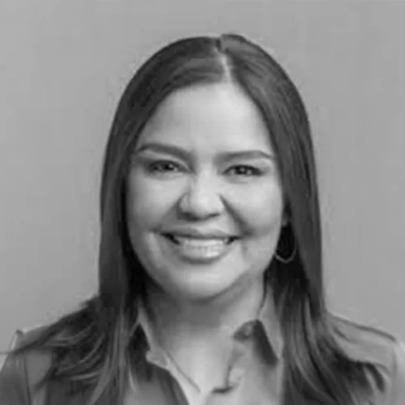
Karyme Adriana Cotes Martínez
Partido LiberalAbogada de la Corporación Universitaria del Caribe y especialista en Derecho Administrativo, fue diputada de la Asamblea de Sucre por el Partido Liberal y desde 2022 es representante a la Cámara por Sucre por el mismo partido, integrando la Comisión Primera y manteniendo una posición cercana al gobierno nacional en el Congreso.
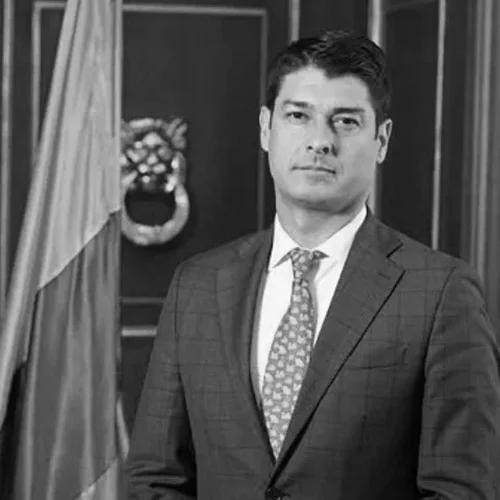
Leonardo de Jesús Gallego Arroyave
Partido LiberalAbogado de la Universidad Libre de Cali, con énfasis en responsabilidad civil y del Estado, y experiencia en derecho administrativo y de la seguridad social. Nació en Medellín, es parte de una familia con trayectoria política en el Valle y heredó la curul de su primo Fabio Arroyave. Fue elegido en 2022 con más de 40 mil votos como representante por el Valle, integrando la Comisión Tercera de Hacienda y Crédito Público, desde la cual ha apoyado las reformas del gobierno Petro y fue ponente de la reforma tributaria.
Luvi Katherine Miranda Peña
Alianza VerdePolitóloga de la Universidad del Rosario, con estudios de especialización en Cultura de Paz, Cohesión Social y Diálogo Intercultural en la Universidad de Barcelona. Nació en Bogotá en 1985 y se hizo visible como lideresa de acciones políticas no violentas y de las juventudes de la "ola verde" en 2010, impulsando iniciativas anticorrupción y de transparencia. Fue una de las representantes más votadas por Bogotá en las listas de la Alianza Verde y ha ganado perfil nacional por sus debates de control político.
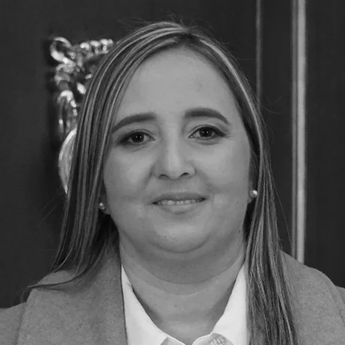
María Eugenia Lopera Monsalve
Partido LiberalIngeniera sanitaria de la Universidad de Antioquia con especialización en Alta Gerencia. Desarrolló gran parte de su carrera profesional en el sector de vivienda y planeación local en el departamento de Antioquia. Saltó a la escena política nacional como fórmula de importantes barones electorales del Partido Liberal. Cobró alto protagonismo mediático por salvar la ponencia de la reforma a la salud del Gobierno en comisiones.
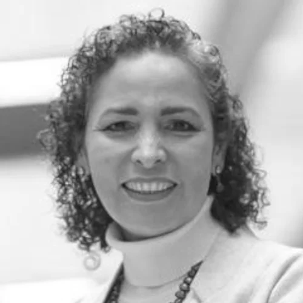
Olga Lucía Velásquez Nieto
Alianza VerdeIngeniera industrial de la Universidad Antonio Nariño, especialista en Gerencia de la Calidad en Servicios de Salud y magíster en Desarrollo Rural. Nació en Villavicencio (Meta) en 1972, pero forjó su carrera técnica y política en Bogotá, donde ocupó cargos de planeación, consultoría y gestión en el sector salud y social. Llegó por primera vez a la Cámara en 2014 con el Partido Liberal y retornó en 2022 por la Alianza Verde, desde donde integra la Comisión Cuarta y la Comisión de Acusaciones, con fuerte agenda en salud mental y presupuesto social.
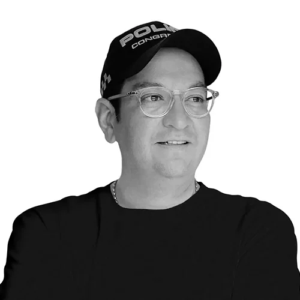
Oscar Leonardo Villamizar Meneses
Centro DemocráticoAbogado de la Universidad Santo Tomás de Bucaramanga, especialista en Derecho de los Negocios del Externado y con estudios de maestría en Derecho Urbano, Desarrollo Territorial y Sostenible. Nació en Bucaramanga en 1985, es hijo del excongresista Alirio Villamizar y ha ocupado cargos como asesor del Senado y secretario en la Gobernación de Santander. Llegó a la Cámara en 2018 por el Centro Democrático, ha integrado la Comisión Primera y la Comisión de Investigación y Acusación, y fue primer vicepresidente de la Cámara en la legislatura 2019–2020.
Wadith Alberto Manzur Imbett
Partido ConservadorIngeniero industrial de la Universidad de los Andes, con maestría en Gobierno y Políticas Públicas (Externado) y posgrado en mercadeo político, representante a la Cámara por Córdoba desde 2018 por el Partido Conservador, donde ha integrado la Comisión Tercera y ha sido una de las mayores votaciones de su departamento.
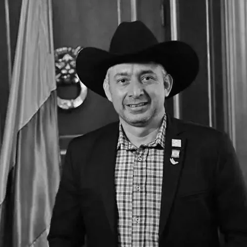
William Ferney Aljure Martínez
Curules de pazLíder social y reclamante de tierras nacido en Villavicencio (Meta) en 1978, nieto del caudillo liberal llanero Dumar Aljure. Es víctima del conflicto armado, pues once miembros de su familia, incluidos sus padres, fueron asesinados por distintos actores armados, lo que marcó su labor como defensor de derechos humanos y ambientalista en el bajo Ariari. Fue voz activa en el proceso de paz de La Habana con la organización Conpazcol y en 2022 fue elegido representante por la Circunscripción Transitoria Especial de Paz número 7, desde donde impulsa agenda de paz, restitución de tierras y protección ambiental.
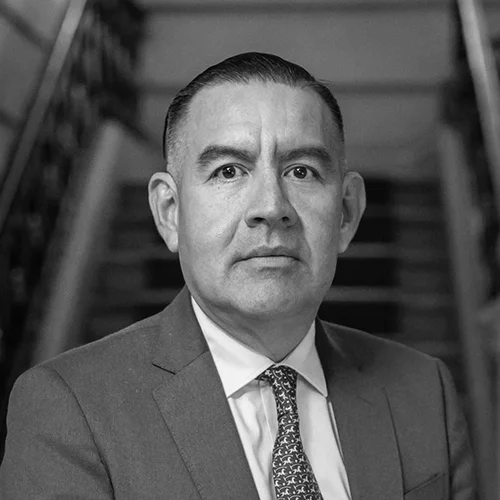
Wilmer Ramiro Carrillo Mendoza
Partido de la UArquitecto de la Universidad Santo Tomás, con especializaciones vinculadas a gestión y administración de la construcción y de lo público. Nació en Arboledas (Norte de Santander) en 1973 y comenzó su carrera política como secretario de Vías e Infraestructura del departamento y luego gobernador encargado en varias ocasiones. Desde 2014 ha sido reelegido de forma consecutiva a la Cámara por Norte de Santander, consolidándose como uno de los caciques electorales del Partido de la U en la región y miembro de la Comisión Tercera.
Es una comisión constitucional y legal de la Cámara de Representantes encargada de investigar las denuncias presentadas contra altos funcionarios aforados.
Sí. La Constitución le atribuye la competencia para investigar al Presidente de la República por hechos ocurridos durante el ejercicio de sus funciones.
Las denuncias son distribuidas entre representantes investigadores mediante mecanismos internos de reparto y asignación definidos por la Comisión. El reparto constituye una de las decisiones más relevantes dentro del funcionamiento de la Comisión, pues determina qué representante investigador asumirá cada expediente. Por ello, el Observatorio realiza seguimiento a los mecanismos de asignación, los tiempos de reparto y la distribución de cargas de trabajo entre los investigadores.
Porque una democracia sólida requiere instituciones sujetas al escrutinio ciudadano y porque la información sobre el funcionamiento de los órganos de control y juzgamiento de altos funcionarios es un asunto de interés público.
El propósito del Observatorio no es sustituir a la Comisión ni anticipar conclusiones sobre investigaciones específicas.
Su propósito es promover una discusión pública basada en evidencia, datos verificables e información accesible sobre una de las instituciones más importantes —y menos estudiadas— del sistema constitucional colombiano.
La transparencia, la trazabilidad y la rendición de cuentas son condiciones necesarias para fortalecer la legitimidad institucional y la confianza ciudadana en el sistema de control de los más altos funcionarios del Estado.